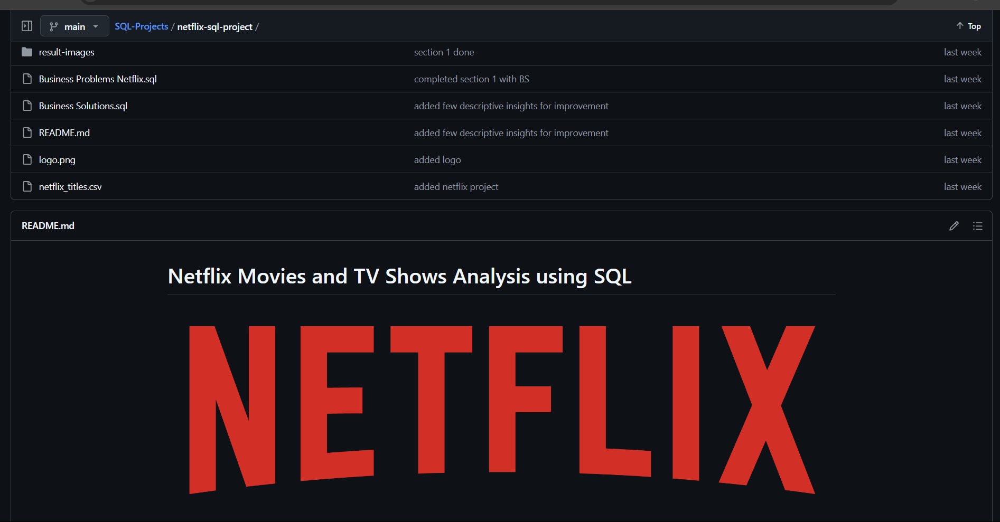

Project Overview
This project focuses on performing a detailed analysis of the Netflix titles dataset. The goal is to derive meaningful insights and create utilities that enhance both business decision-making and user experience.
Technologies Used
-
 SQL
SQL
Download Dataset
Key Steps and Analyses
- Understanding Null/Missing/Unknown Values: Conducted a thorough investigation into columns with null, missing, or unknown values to assess data quality and identify areas requiring data cleaning. Assessing data integrity for better analysis.
- Creating a Cleaned View for Better Analysis: Developed a cleaned view of the dataset by addressing inconsistencies and standardizing the data, enabling more accurate and efficient analysis. Standardizing data for enhanced usability.
- Understanding Movies & TV Shows Distribution: Analyzed the distribution of movies and TV shows to understand content trends and preferences, providing insights into the types of content available on the platform. Identifying content trends for strategic planning.
- Understanding the Different Genres: Explored the various genres available in the dataset to identify popular genres and their distribution, aiding in content strategy and recommendation systems. Recognizing genre preferences to optimize recommendations.
- Insights about the Directors and Casts: Investigated the directors and cast members, identifying prolific contributors and their impact on content popularity, which can inform talent acquisition and collaboration decisions. Highlighting key contributors for strategic collaborations.
- Understanding Length of Movies and TV Shows: Analyzed the duration of movies and TV shows, identifying patterns and inconsistencies. This helps in understanding content length preferences and standardizing duration data. Determining ideal content lengths for viewer engagement.
- Creating Stats for The Top Actor: Developed detailed statistics for the top actor, including the number of shows they appear in, types of shows, and geographical distribution. This helps in talent evaluation and understanding actor popularity. Evaluating actor impact on content success.
- Utilities for Customers: Created utilities such as the "Top 10 Latest Movies List" to enhance user experience by providing quick access to popular and recent content. Improving user experience with easy access to trending content.
Detailed Analysis and Code
For a comprehensive overview of the analysis and to view the complete code, visit my GitHub repository:
GitHub RepositorySome Descriptive Insights
| Category | Insight |
|---|---|
| Movie & TV Shows distribution | The data shows that the number of movies and TV shows on the platform has increased significantly since 2015. While the number of movies has increased by around 90%, the number of TV shows has seen a more dramatic increase of approximately 460%. This suggests that the platform has been actively expanding its TV show content. |
| Market Presence | The data shows that the United States dominates the streaming market with the highest number of movies and TV shows, while countries like India, South Korea, and Japan have a significant presence in both categories. Emerging markets like Nigeria, Mexico, and Australia are also gradually increasing their influence. |
| Rating for Movie & TV Show | The data shows that the majority of movies and TV shows on the platform are rated "Restricted/Adult" and "Parents Strongly Cautioned," indicating a significant portion of the content is intended for mature audiences. While there are a smaller number of movies and TV shows rated "General Audience" and "Parental Guidance Suggested," the content on the platform leans towards a more mature demographic. |
| Genre | Netflix offers a diverse range of content, with a strong focus on international movies and TV shows. Popular genres include dramas, comedies, and documentaries, catering to various viewer preferences. This strategy helps attract and retain a broad audience base. |
| Top Actor Stats | The analysis reveals that Anupam Kher has been a prominent figure in the entertainment industry for 29 years. He has worked in 42 movies and 1 TV show across various countries, including India, Canada, and the United States. His versatile career has spanned 14 diverse genres, including Crime, Comedy, Musical, Sci-fi Fantasy, and others, and he has collaborated with 273 actors. |
| Top Comedians | The top 3 comedians who have appeared in the most stand-up comedy shows on Netflix after 2018 are Jeff Dunham, Kevin Hart, and Katt Williams. |
Outcomes
This project provides an in-depth analysis of the Netflix titles dataset, enhancing data quality and usability through thorough cleaning and standardization. It uncovers content trends, genre popularity, informing strategic content planning. Insights into directors, casts, and content duration help optimize talent acquisition and content curation. Additionally, actor statistics offer valuable information for talent evaluation. These findings can inform business strategies and enhance the overall user experience on the platform.
Connect with Me